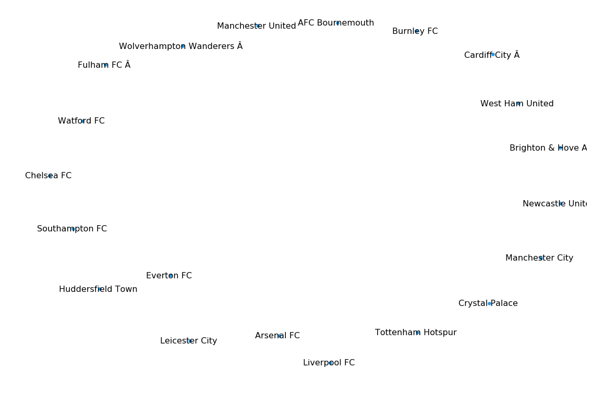
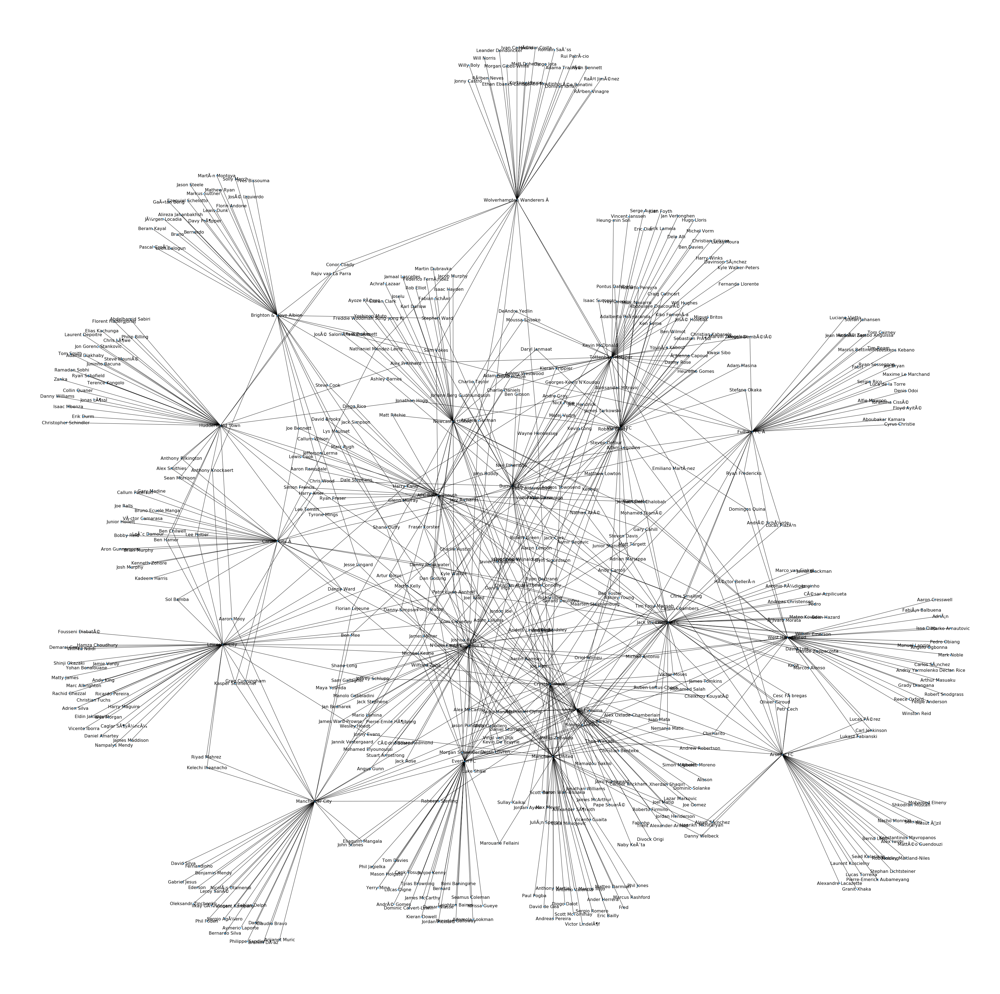
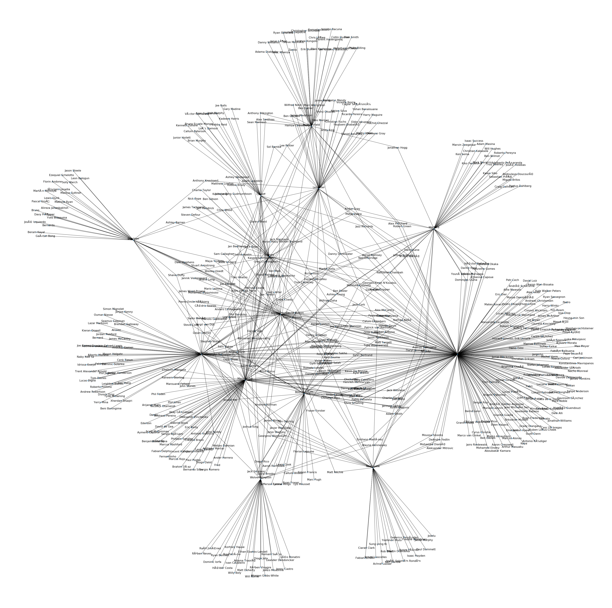

The objective of this project was to expose this year's Premier League, bring to the light all the connections between the league's teams, players and cities. The major reasong to work with this subject is the personal passion about football and English premiership especially. It is interesting to see how the teams are connected, which are the teams that most of the current active premier league players have played for and in which cities most of the active players have played during their career.
Since Premier League is the most popular football league in the world nowadays, there are several sources that could be used to get the appropriate data for this project. After a thorough evaluation of some websites, transfermarkt.co.uk was the selected one as it contains the data in a good structure. Transfermarkt is a website that includes all the information about football teams and players. Due to the reason that there is no accessible API for Transfermarkt, we used HTML parsing in different subpages of the website to get the needed data. After getting the data, two datasets were created, one for the teams and one for the players. The former includes for each team a full and a short name, the link to the team's profile, an id and the city the team is located. The latter includes for each player a full name, the link to his profile, an id, and an array of the teams he has played for during his career. Players' data has a size of 109KB and teams' data about 3KB.
Here are all the premier league teams parsed from Transfermarkt:

The next graph presents all connections between teams based on football players and the teams that have played during their career:

From this graph we can see in which teams most of the players have played for during their career.
| 62 Southampton FC |
| 56 Chelsea FC |
| 54 Leicester City |
| 52 Manchester United |
| 52 Watford FC |
| 51 Everton FC |
| 49 Manchester City |
| 49 Tottenham Hotspur |
| 47 Burnley FC |
| 46 AFC Bournemouth |
| 46 Huddersfield Town |
| 44 Liverpool FC |
| 44 Arsenal FC |
| 43 West Ham United |
| 43 Fulham FC |
| 43 Newcastle United |
| 41 Crystal Palace |
| 39 Cardiff City |
| 38 Brighton & Hove Albion |
| 37 Wolverhampton Wanderers |
Southampton comes first in this analysis. It is something obvious as it is known that it has one of the best academies in England and sell every year players to bigger teams in the league.
The next graph presents all connections between cities based on the cities the football players have played in during their career:

| 276 London |
| 101 Manchester |
| 95 Liverpool |
| 62 Southampton |
| 54 Leicester |
| 52 Watford |
| 47 Burnley |
| 46 Bournemouth |
| 46 Huddersfield |
| 43 Newcastle |
| 39 Cardiff |
| 38 Brighton |
| 37 Wolverhampton |
London comes first in this analysis. It is the city with the most football teams in England and the strongest ones.